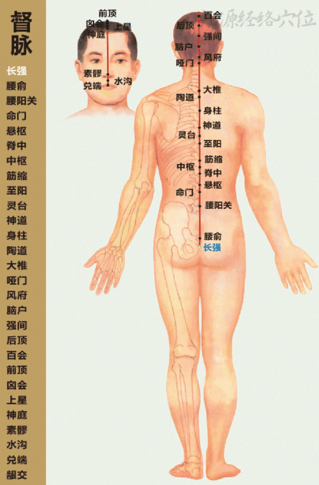
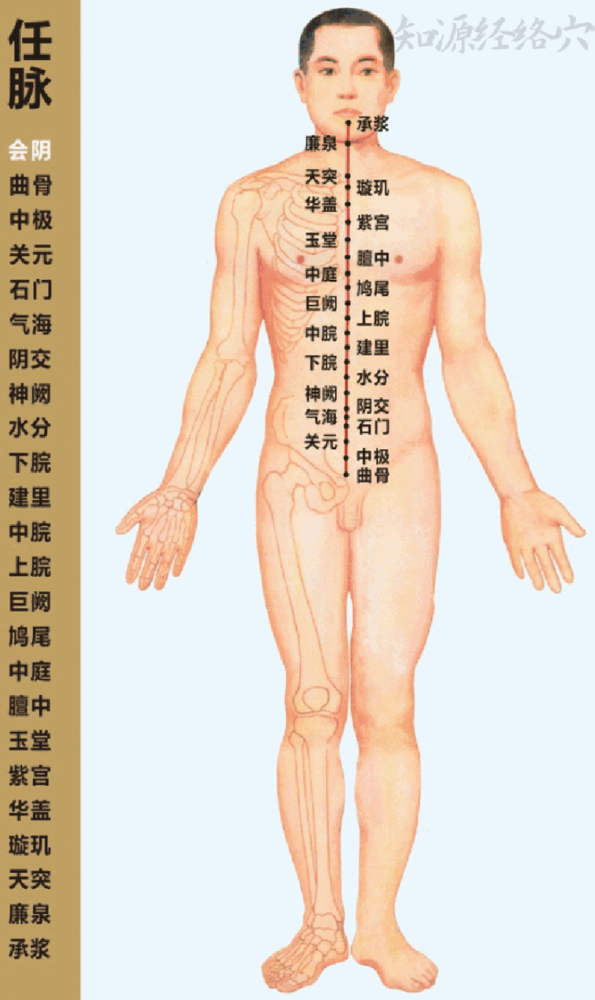

Sea of Yang Channels. Up the back midline, perineum to upper lip. Governs all yang qi.
阳脉之海。起于会阴，循背正中上行至唇上龈交。总督一身之阳气。

A study reference of the classical channels and their points — built from the traditional memory verses (歌诀) that students of acupuncture have memorised for centuries. Each verse below links to the authoritative point list at 医砭 yibian.hopto.org.
本页为经络与腧穴的学习参考，内容取自历代针灸歌诀（明·杨继洲《针灸大成》一脉相承的记诵口诀）。每首歌诀下方链接至 医砭 yibian.hopto.org 的权威穴位资料。
Classical mnemonic. The first four lines are the famous "四总穴" — the four most-used points in all of acupuncture, said to cover most everyday complaints.
古传歌诀，朗朗上口。前四句即所谓「四总穴」，乃针灸临床最常用之四穴，足以应日常诸症之大半（详见《针灸大成·卷九》）。
On every one of the twelve main meridians, the five points distal to the elbow or knee map the metaphor of a flowing stream:
十二正经各有五输穴，皆位肘膝以下，由远端而近，喻之以山泉之流——从涓滴始出，渐入江海，气血由浅入深、由小至大：
| Point | Where qi… | Yin/Yang element | Classical use |
|---|---|---|---|
| 井 Well (Jǐng) | issues forth | Wood / Metal | Epigastric fullness; emergency revival |
| 荥 Spring (Xíng) | glides | Fire / Water | Febrile diseases, heat patterns |
| 输 Stream (Shū) | pours | Earth / Wood | Heaviness, joint pain; on yin channels also serves as source point |
| 经 River (Jīng) | moves through | Metal / Fire | Wheezing, cough, alternating chills/fever |
| 合 Sea (Hé) | enters the deep | Water / Earth | Counterflow qi & diarrhea; preferred for fu-organ disorders |
From 《灵枢·九针十二原》: 所出为井，所溜为荥，所注为输，所行为经，所入为合.
本于《灵枢·九针十二原》：「所出为井，所溜为荥，所注为输，所行为经，所入为合。」
Beyond the five-shu, classical TCM groups certain points by clinical function:
除五输穴之外，传统针灸学按临床功用，将经络上的若干腧穴归为「特定穴」：
Where each organ's original qi (元气) surfaces. Used to diagnose and treat the deepest disorders of the parent organ.
脏腑元气所注之处，共十二穴。诊察与治疗本脏腑深层病变所必取。
"For diseases of the five viscera, draw on the twelve source points." — 《灵枢》
Bridge a yin-yang meridian pair. Used in 原络配穴: pair the source point of the diseased channel with the connecting point of its paired channel.
沟通表里两经之要穴，共十五穴。常用于「原络配穴」之法：本经取原穴，表里经取络穴，相配以治。
On the chest and abdomen, where each organ's qi gathers. Tender on palpation when the corresponding organ is in distress.
分布于胸腹之间，为脏腑之气所聚之处。本脏腑有疾，按之多见压痛或结节。
On the inner Bladder line of the upper-back. Each pairs with a Front-Mu point: the famous 俞募配穴 couplet.
位于背部足太阳膀胱经第一侧线。每穴与对应「募穴」相配，即古法所谓「俞募配穴」，前后并取，相得益彰。
Where qi and blood gather deeply. Especially used for acute pain and emergency conditions of the channel.
气血深聚之所，共十六穴。本经急性疼痛、出血与急症首选。
For each yang organ. "He points govern the six fu organs" — the points of choice for stomach, intestine, gallbladder and bladder disorders.
六腑各有下合穴。「合治六腑」——胃、肠、胆、膀胱诸腑之疾，皆当首取下合穴。
Each gathers the qi of one substance class: 脏 zang, 腑 fu, 气 qi, 血 blood, 筋 tendon, 脉 vessel, 骨 bone, 髓 marrow.
八穴各为一类气血津液之所会：脏会、腑会、气会、血会、筋会、脉会、骨会、髓会。
Where the eight extraordinary vessels meet the main channels. Used in classical pairs (公孙-内关, 后溪-申脉, 临泣-外关, 列缺-照海).
奇经八脉与十二正经交会之处。临床多用古传配穴：公孙-内关、后溪-申脉、临泣-外关、列缺-照海。
The flow direction of qi follows a strict order: arm-yin from chest to hand, arm-yang from hand to head, leg-yang from head to foot, leg-yin from foot to chest — completing the great daily circulation traced by the 子午流注 clock at left.
气血流注有定序：手之三阴，从胸走手；手之三阳，从手走头；足之三阳，从头走足；足之三阴，从足走胸——昼夜不停，循环无端，即左侧子午流注之钟所示之大循环也。
Eight reservoir vessels that regulate and overflow into the twelve main meridians.
奇经八脉者，调节与溢蓄十二正经气血之要道，犹江湖之于川流。
Sea of Yang Channels. Up the back midline, perineum to upper lip. Governs all yang qi.
阳脉之海。起于会阴，循背正中上行至唇上龈交。总督一身之阳气。

Sea of Yin Channels. Up the front midline, perineum to lower lip. Central to gynecology and fertility.
阴脉之海。起于会阴，循腹胸正中上达承浆。任主胞胎，妇科与孕育之关键。

Sea of the Twelve Channels. Rises with the Kidney channel. Controls blood and ancestral qi.
十二经之海，又称血海。与肾经并行而上。主血与先天之元气。
"Belt Vessel." Wraps the waist horizontally, binding all vertical channels.
横绕腰腹一周，如带束身。约束诸条纵行经脉，使其不致弛纵。
Yang and Yin Linking Vessels. Connect all yang or yin channels respectively. Yang Wei diseases bring chills/fever (exterior); Yin Wei diseases bring heart pain (interior).
维系诸阳与诸阴之经脉。阳维为病苦寒热（在表），阴维为病苦心痛（在里）。
Yang and Yin Heel Vessels. Govern eye opening/closing and lower-limb motion. Imbalance shows as insomnia or somnolence.
主司目之开合与下肢运动。阳跷盛则不眠，阴跷盛则多寐。
| Channel | Cleft Point (郄穴) | Channel | Cleft Point |
|---|---|---|---|
| Lung 肺 | 孔最 LU6 | Large Intestine 大肠 | 温溜 LI7 |
| Stomach 胃 | 梁丘 ST34 | Spleen 脾 | 地机 SP8 |
| Heart 心 | 阴郄 HT6 | Small Intestine 小肠 | 养老 SI6 |
| Bladder 膀胱 | 金门 BL63 | Kidney 肾 | 水泉 KI5 |
| Pericardium 心包 | 郄门 PC4 | Triple Burner 三焦 | 会宗 TE7 |
| Gallbladder 胆 | 外丘 GB36 | Liver 肝 | 中都 LV6 |
| Yang Qiao 阳跷 | 跗阳 BL59 | Yin Qiao 阴跷 | 交信 KI8 |
| Yang Wei 阳维 | 阳交 GB35 | Yin Wei 阴维 | 筑宾 KI9 |
Cleft (郄) means "deep gathering" — these are points where qi and blood concentrate. They are the points of choice for acute pain and emergency conditions of the corresponding channel.
「郄」者，间隙深聚之意——气血所深聚之处。本经急性疼痛、出血与急症，取郄穴为首选。
| Organ | Front-Mu | Location |
|---|---|---|
| Lung · 肺 | 中府 Zhōng Fǔ (LU1) | Upper chest, 6 cùn lateral to midline, 1st intercostal space |
| Heart · 心 | 巨阙 Jù Què (CV14) | Upper abdomen midline, 6 cùn above the navel |
| Liver · 肝 | 期门 Qī Mén (LV14) | 6th intercostal space, 4 cùn lateral to midline (directly below the nipple) |
| Gallbladder · 胆 | 日月 Rì Yuè (GB24) | 7th intercostal space, 4 cùn lateral to midline |
| Spleen · 脾 | 章门 Zhāng Mén (LV13) | Side abdomen, below the free end of the 11th rib |
| Stomach · 胃 | 中脘 Zhōng Wǎn (CV12) | Upper abdomen midline, 4 cùn above the navel |
| Large Intestine · 大肠 | 天枢 Tiān Shū (ST25) | Lateral to the navel, 2 cùn either side |
| Small Intestine · 小肠 | 关元 Guān Yuán (CV4) | Lower abdomen midline, 3 cùn below the navel |
| Triple Burner · 三焦 | 石门 Shí Mén (CV5) | Lower abdomen midline, 2 cùn below the navel |
| Bladder · 膀胱 | 中极 Zhōng Jí (CV3) | Lower abdomen midline, 4 cùn below the navel |
| Pericardium · 心包 | 膻中 Dàn Zhōng (CV17) | Mid-sternum, level with the nipples (men) or 4th intercostal (women) |
| Kidney · 肾 | 京门 Jīng Mén (GB25) | Side waist, below the free end of the 12th rib |
Front-Mu points become tender on palpation when their associated organ is in distress. They are classically paired with the corresponding back-shu point on the Bladder line — the famous "俞募配穴" couplet — to treat the organ from both front and back simultaneously.
本脏腑有疾，则其募穴按之多见压痛。古法多与膀胱经第一侧线之背俞穴相配——即名传千古之「俞募配穴」——前后并取，使气血贯通脏腑。
Every channel has its own series of five-shu points arranged distal-to-proximal (fingertip/toe → elbow/knee). On yin channels the Stream point doubles as the Source (以输代原); on yang channels the Source is a separate point that follows the Stream.
每经皆有自家五输穴，按由远端至近端（指尖／趾尖 → 肘膝）排列。阴经以「输」代「原」（以输代原）；阳经则原穴另立，位于输穴之后。
| Channel | 井 Well | 荥 Spring | 输 Stream | 原 Source | 经 River | 合 Sea |
|---|---|---|---|---|---|---|
| 手太阴肺 | 少商 | 鱼际 | 太渊 ⇆ | 经渠 | 尺泽 | |
| 手阳明大肠 | 商阳 | 二间 | 三间 | 合谷 | 阳溪 | 曲池 |
| 足阳明胃 | 厉兑 | 内庭 | 陷谷 | 冲阳 | 解溪 | 足三里 |
| 足太阴脾 | 隐白 | 大都 | 太白 ⇆ | 商丘 | 阴陵泉 | |
| 手少阴心 | 少冲 | 少府 | 神门 ⇆ | 灵道 | 少海 | |
| 手太阳小肠 | 少泽 | 前谷 | 后溪 | 腕骨 | 阳谷 | 小海 |
| 足太阳膀胱 | 至阴 | 足通谷 | 束骨 | 京骨 | 昆仑 | 委中 |
| 足少阴肾 | 涌泉 | 然谷 | 太溪 ⇆ | 复溜 | 阴谷 | |
| 手厥阴心包 | 中冲 | 劳宫 | 大陵 ⇆ | 间使 | 曲泽 | |
| 手少阳三焦 | 关冲 | 液门 | 中渚 | 阳池 | 支沟 | 天井 |
| 足少阳胆 | 足窍阴 | 侠溪 | 足临泣 | 丘墟 | 阳辅 | 阳陵泉 |
| 足厥阴肝 | 大敦 | 行间 | 太冲 ⇆ | 中封 | 曲泉 | |
⇆ marks where the Stream point and the Source point are the same on yin channels (以输代原).
⇆ 标示阴经「输」「原」同穴（以输代原）。
The metaphor running through the five-shu naming is water itself. Qi flows through the limbs the way a stream flows from the mountain to the sea — and this isn't ornamental poetry. The quality of qi at each station differs, and so do the clinical uses:
五输穴的命名贯穿一脉之喻象——水也。气血循行四肢，犹溪泉自山而入江、由江而归海，非仅辞藻。每一站之气血性质不同，临床应用亦异：
"所出为井" — where qi issues forth. At the fingertips and toes.
「所出为井」——气之初出处。位于手足末端。
Qi here is shallow but vital — like the first drops of an Alpine spring. Used for 急救 emergency revival (loss of consciousness, stroke onset), and for 心下满 (epigastric fullness, chest oppression). The shallow depth is exactly why these points respond to a single drop of pricking — they reset the channel from its origin.
井穴气浅而源真，犹高山涌泉之初滴。古用于急救（神昏、中风初起）与心下满（胃脘胀闷、胸中窒塞）。气位浅，故点刺出血即效——重启本经之源。
"所溜为荥" — where qi glides. The second point.
「所溜为荥」——气之初行处。第二穴。
Qi has begun to flow but is still close to the surface. Classical use: 身热 — heat patterns and febrile conditions. The water-imagery is apt: a Spring point is where you would dip your hand to cool the channel.
气已动而未深。古传：「荥主身热」——主治热病、身热诸证。水意贴切：荥穴正如俯身濯手以凉本经者也。
"所注为输" — where qi pours. Third point. On yin channels, also serves as 原 Source.
「所注为输」——气之灌注处。第三穴。阴经则兼为原穴。
Classical use: 体重节痛 — heaviness of the body, joint pain, dampness. This is where qi gathers volume and so where stagnation first slows it down. On yin meridians, the Stream is the Source — this is why 太溪 KI3, 太冲 LV3, etc. carry double duty.
古用：「输主体重节痛」——主治身重、关节疼痛、湿邪诸证。气至此处始聚成势，故停滞之邪首发于此。阴经则「输」即「原」——故太溪、太冲等皆兼二职。
"所行为经" — where qi moves through. Fourth point.
「所行为经」——气之畅行处。第四穴。
Qi has volume and direction now. Classical use: 喘咳寒热 — wheezing, cough, alternating chills and fever. This is the level of the qi that interfaces with the wei-defensive layer; River points address half-exterior, half-interior pathology.
气有体有向，行如江河。古用：「经主喘咳寒热」——主治喘息、咳嗽、寒热往来。此层与卫气相接，经穴主半表半里之证。
"所入为合" — where qi enters the deep body. Fifth point, near elbow or knee.
「所入为合」——气之归汇处。第五穴，位近肘膝。
Classical use: 逆气而泄 — counterflow qi and diarrhea; the preferred level for 六腑 fu-organ disorders ("合治六腑" — 《灵枢》). When qi reaches the Sea it has joined the larger trunk circulation; treatment here addresses systemic patterns rather than channel-specific signs.
古用：「合主逆气而泄」——主治气逆与腹泄；并为六腑诸疾首选层（「合治六腑」，《灵枢》）。气至合穴已汇入大循环，故合穴所治多属全身性整体证，而非单经局部之症。
Twelve points; on yang channels separate from the Stream.
共十二穴；阳经原穴另立，与输穴分。
From 《灵枢·九针十二原》: "五脏有疾，当取之十二原。十二原者，五脏之所以禀三百六十五节之气味者也" — for diseases of the five viscera, draw upon the twelve source points; they are how the five viscera receive the qi of all 365 joints. The Source is the deepest expression of the channel — the point at which to read and repair the original qi (元气) of the parent organ.
《灵枢·九针十二原》：「五脏有疾，当取之十二原。十二原者，五脏之所以禀三百六十五节之气味者也。」——五脏有疾，当取十二原；十二原者，乃五脏所以禀受三百六十五节气味之处也。原穴为本经最深之表达——既以诊本脏腑之元气（元气），亦以治之。
This system is also the foundation of 子午流注 time-acupuncture. The 纳甲 method selects different five-shu points to needle at different hours of the day — and the choice depends not only on the active meridian (which the clock at left tracks) but on which level of the river-flow analogy is dominant at that moment.
此系亦为子午流注时辰针法之根本。「纳甲法」按一日时辰择不同五输穴而刺——所择不独依当令之经（左侧时辰钟所示者），且赖此时水流喻象之何层为主而定。
Classical TCM treats menstrual disorders by harmonising the four extraordinary vessels most relevant to the lower burner — 任脉 Rèn (Conception), 督脉 Dū (Governor), 冲脉 Chōng (Penetrating), 带脉 Dài (Belt) — together with the three organs that govern blood, qi, and reproductive essence: Liver, Spleen, and Kidney. The point selections below draw on Master 郭's clinical notes (郭氏针灸) and the canonical indications in 《针灸大成·卷九·妇人门》.
传统中医调治妇科月事，重在和调下焦四奇经——任脉、督脉、冲脉、带脉——并兼调主血、主气、藏精之三脏：肝、脾、肾。下列配穴取自郭氏针灸临证手记与《针灸大成·卷九·妇人门》之传统主治。
Pain before, during, or after menstruation. Three classical patterns: cold-stasis 寒凝血瘀 (pain eased by warmth, dark clotted flow), qi-blood stagnation 气滞血瘀 (sharp/distending pain, cycle irregular), and qi-blood deficiency 气血两虚 (dull ache eased by pressure, scant pale flow).
经前、经期或经后小腹疼痛。古传辨为三型：寒凝血瘀（得温则减、经色黑紫有块）、气滞血瘀（胀刺并见，周期不定）、气血两虚（隐痛喜按，经少色淡）。
"For dysmenorrhea — cold and stasis in the lower burner, liver qi binding the blood — the three essential points are 三阴交, 地机, and 关元." — clinical lineage
Absent or markedly delayed menstruation (excluding pregnancy and menopause). Patterns: blood deficiency 血虚 (gradual scant flow → cessation), kidney-liver deficiency 肝肾不足 (often after illness or overwork), qi-blood stagnation 气滞血瘀 (sudden stop with abdominal distension), and phlegm-damp obstruction 痰湿阻滞 (often with overweight or PCOS).
月事不行或显著延迟（除妊娠与绝经外）。常见证型：血虚（经量渐少而至停闭）、肝肾不足（多见病后或劳损）、气滞血瘀（骤然不下，腹满胀痛）、痰湿阻滞（多见肥胖或多囊卵巢者）。
"For absent menses: 关元 and 气海 nourish the root; 三阴交 and 血海 regulate the blood; 太冲 resolves stagnation." — adapted from《针灸大成·卷九》
Variable cycle length, flow, or duration. Three subtypes: 月经先期 (early — usually heat or qi-deficient); 月经后期 (late — usually cold or blood-deficient); 月经先后无定期 (variable — usually liver-qi stagnation or kidney deficiency). Choice of points follows the dominant pattern.
周期、经量或经期长短皆变之症。分三种：月经先期（多属热或气虚不能摄）、月经后期（多属寒或血虚不能盈）、月经先后无定期（多属肝郁、肾虚）。配穴依其本证而异。
"When menses are variable: liver-kidney imbalance — needle 太冲, 肾俞, 三阴交. For early menses (heat) add 血海; for late menses (cold) add moxibustion to 关元."
Lifestyle support common to all three: keep the lower abdomen and feet warm during the days before and during menses; favour warming foods (ginger tea, longan, red dates, walnuts); avoid raw/cold foods and iced drinks; sleep before 23:00 to support the liver's blood-storage hour. Acupressure (firm circular pressure for 1–2 minutes per point) is the safest self-application; needling and moxibustion should be performed by a licensed practitioner.
三证共通之生活调护： 经前及经期宜暖小腹与足；多温性饮食（姜茶、桂圆、红枣、核桃）；忌生冷与冰饮；亥时（21–23 时）前入眠以养肝藏血。指压（每穴持续按压一至二分钟）为最安全之自助法；针刺与艾灸当由有执照之中医师施行。